図解：北方ルネサンス（後編）
ドイツの北方ルネサンス
- 15世紀
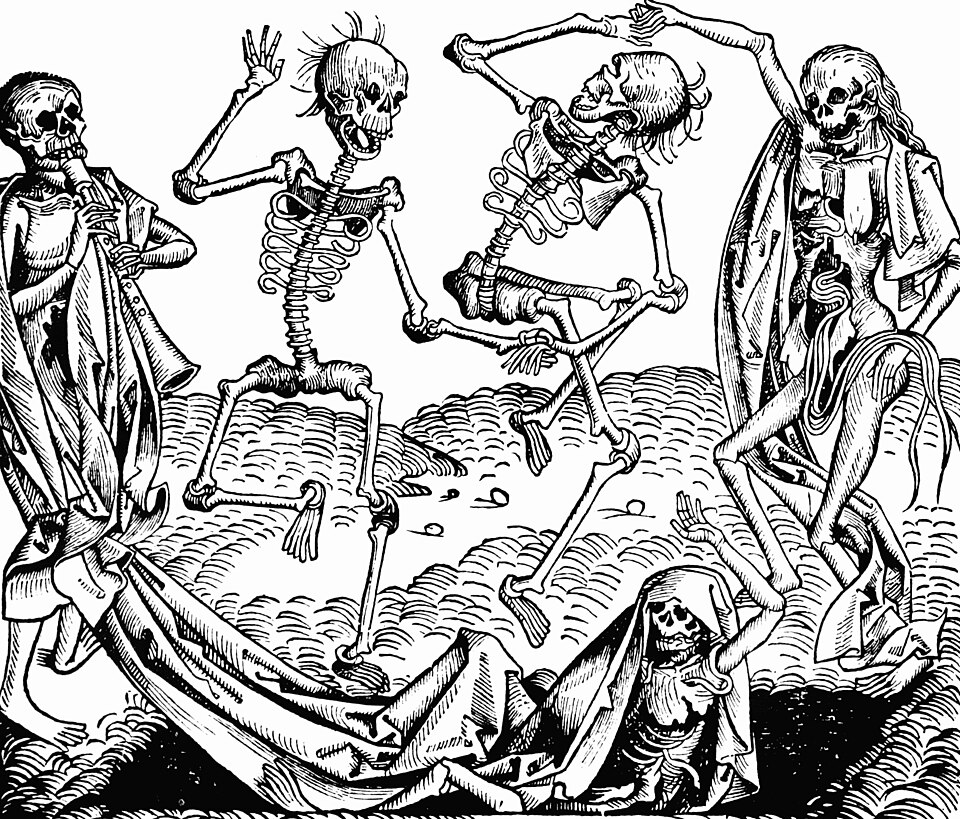
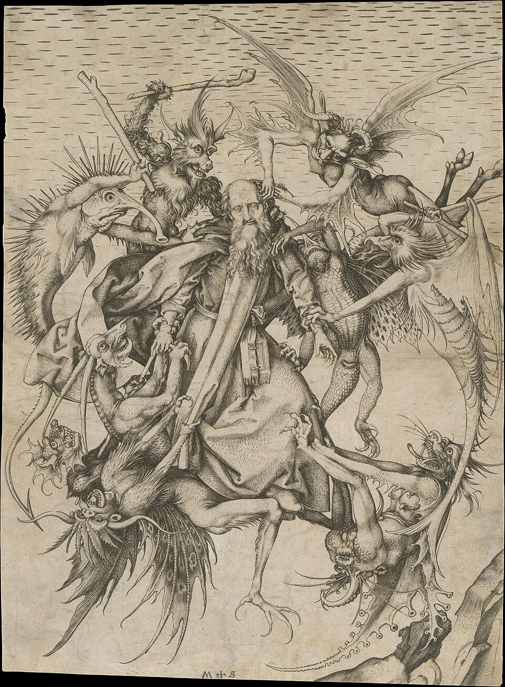
ドイツのゴシック苦痛を強調したキリスト像
「死の舞踏」と版画の伝統 - 15世紀末〜
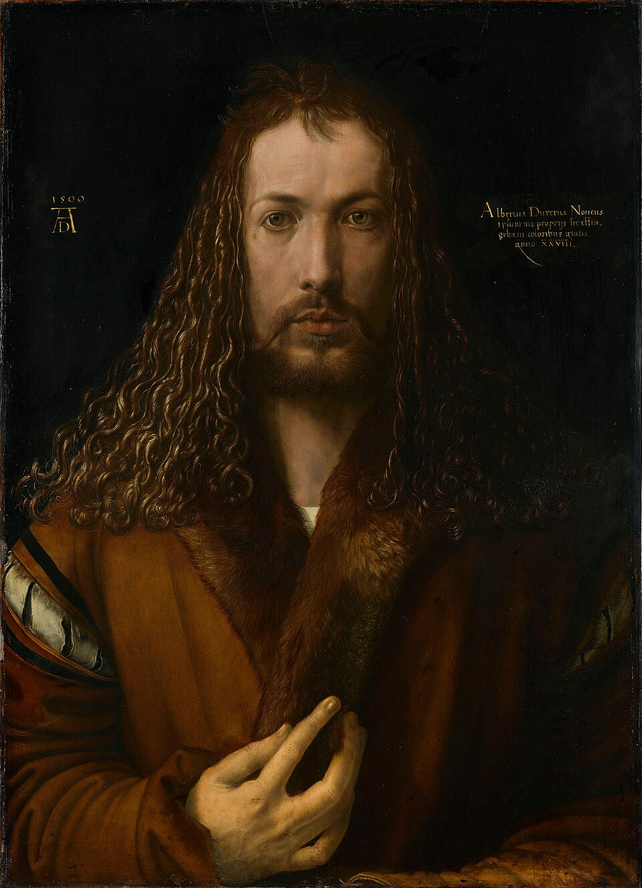
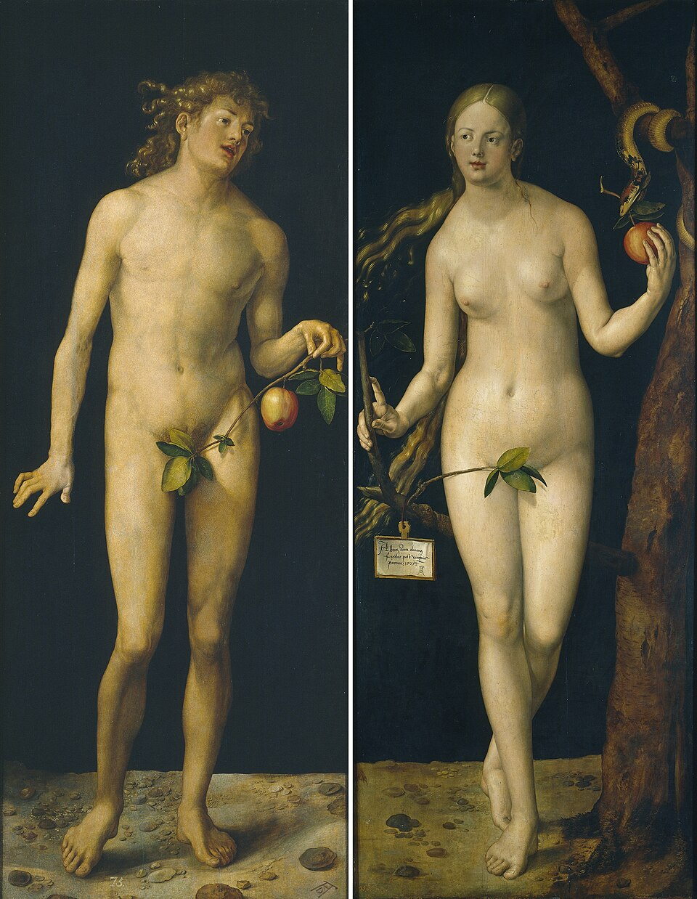
デューラーがイタリアで学ぶヴェネツィアで理想美に触れる
自然と人体比率の研究で融合 - 1517
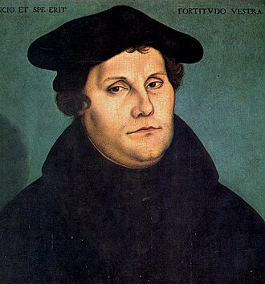
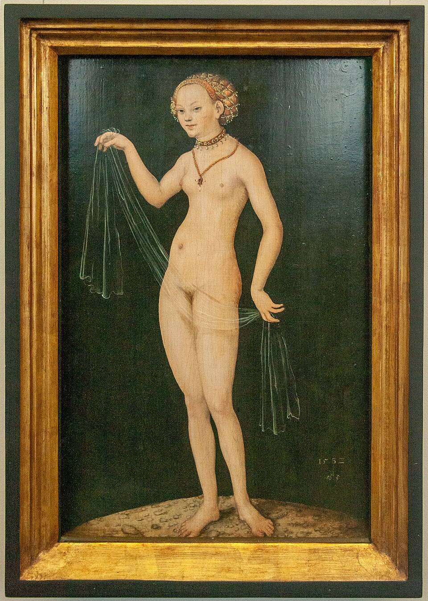
ルターの宗教改革宗教画の注文が減る
クラーナハは神話画と肖像へ - 16世紀
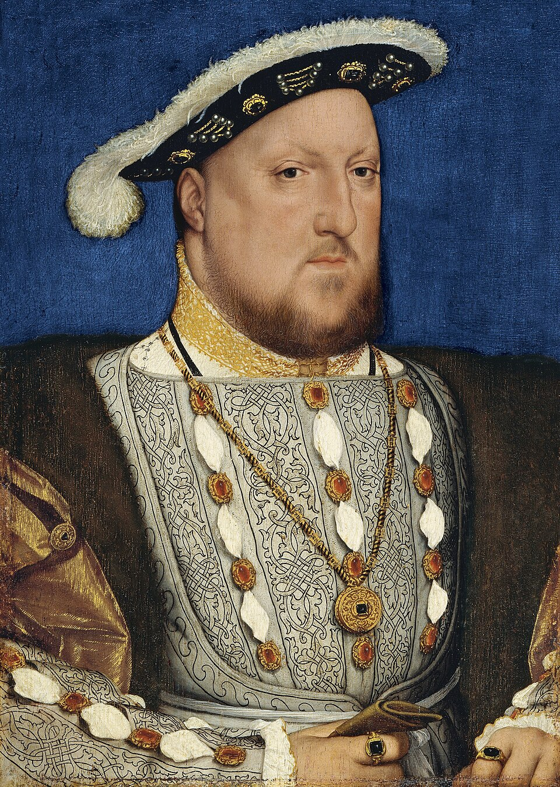
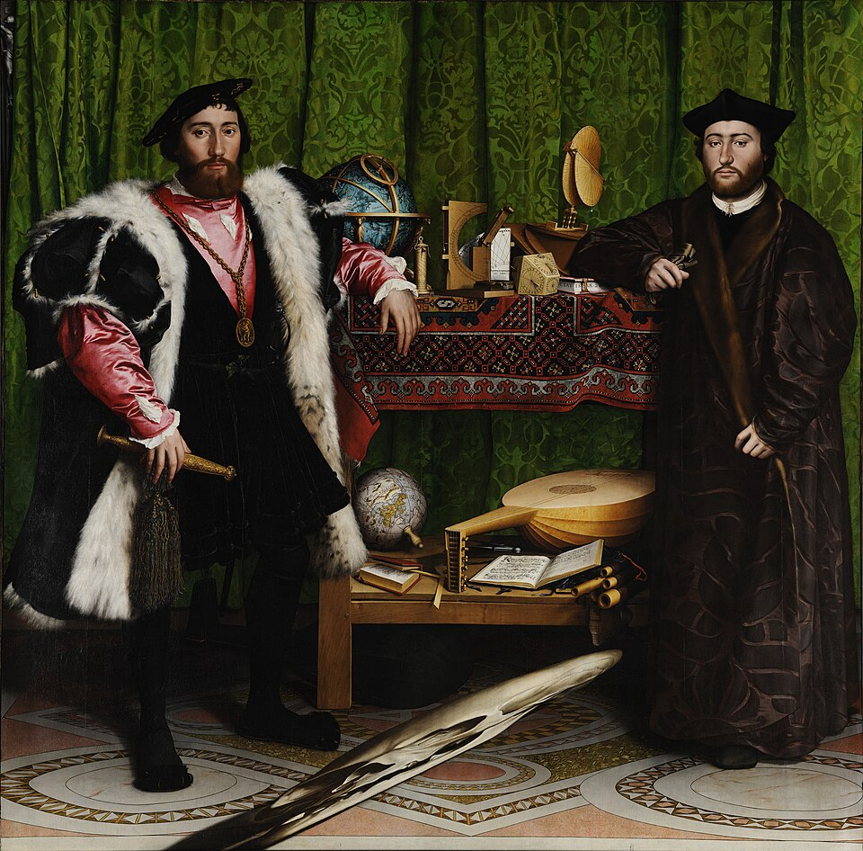
ホルバインがイングランドへヘンリー8世の宮廷画家
北方の様式を持ち込む
イタリアと何が違うか
図版の出典
- 《死の舞踏（ニュルンベルク年代記の挿絵）》ミヒャエル・ヴォルゲムート：出典（Public domain）
- 《悪魔に苦しめられる聖アントニウス（聖アントニウスの誘惑）》マルティン・ショーンガウアー：出典（CC0 1.0）
- 《自画像（毛皮の上着を着た自画像）》アルブレヒト・デューラー：出典（CC0 1.0）
- 《アダムとエヴァ》アルブレヒト・デューラー：出典（Public domain（PD-Art））
- 《マルティン・ルターの肖像》ルーカス・クラーナハ（父）：出典（Public domain（PD-Art））
- 《ヴィーナス》ルーカス・クラーナハ（父）：出典（CC BY-SA 4.0）
- 《イングランド王ヘンリー8世の肖像》ハンス・ホルバイン（子）：出典（Public domain（PD-Art））
- 《大使たち》ハンス・ホルバイン（子）：出典（Public domain（PD-Art））
重要人物
ドイツの画家
- アルブレヒト・デューラー画家イタリアで学び、自然から学ぶ写実と版画で融合
- グリューネヴァルト画家「影の巨匠」。苦痛を強調する伝統を引き継ぐ
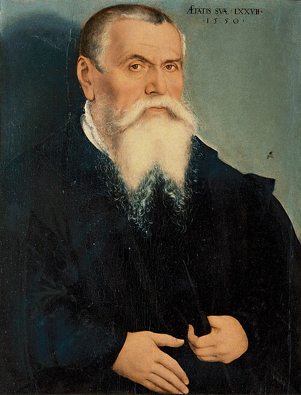
ルーカス・クラーナハ宮廷画家神話画で工房を築き、ルターの肖像で名を広める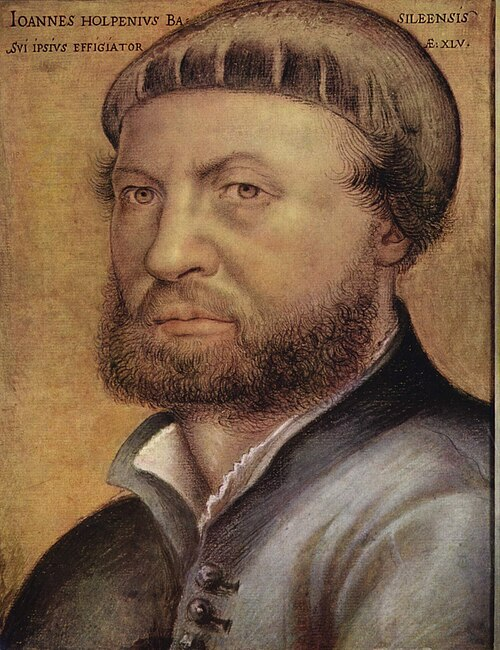
ハンス・ホルバイン宮廷画家イングランドへ渡りヘンリー8世に仕える- アルブレヒト・アルトドルファー画家純粋な風景画を描いた最初期の画家とされる
- ハンス・バルドゥング画家デューラーの弟子ともいわれる。命のはかなさを描く
宗教改革と君主
- マルティン・ルター宗教改革者1517年に宗教改革。選帝侯の保護で聖書を独訳
- カタリナルターの妻クラーナハがルターと対の肖像に描く
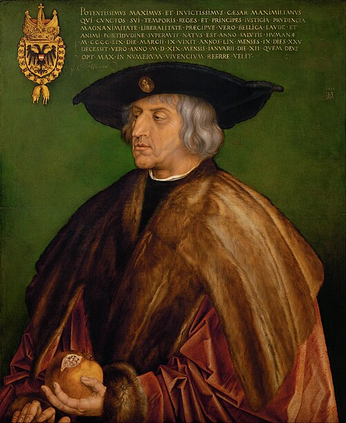
マクシミリアン1世神聖ローマ皇帝デューラーが巨大な版画を制作- ヘンリー8世イングランド王離婚問題で教皇と対立し、国教会を樹立
ホルバインが描いた人
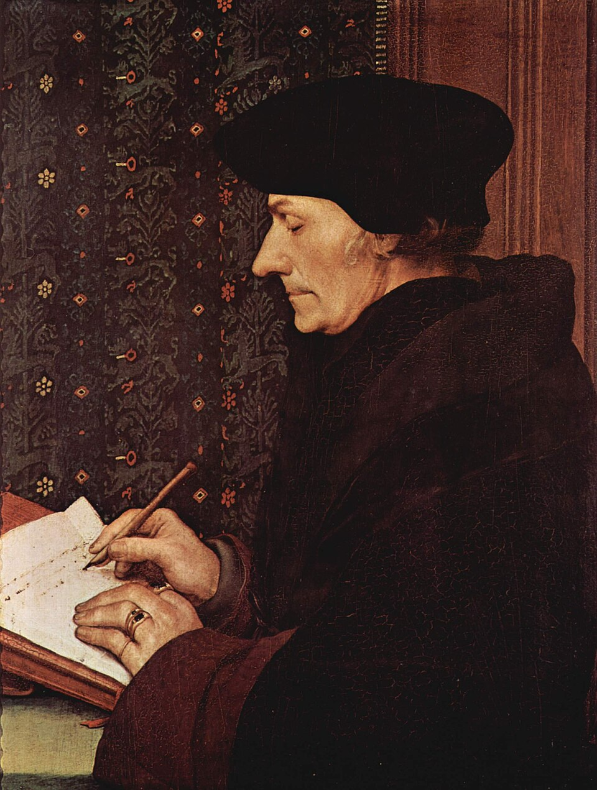
エラスムス人文学者ネーデルラント出身。ルターにも影響を与える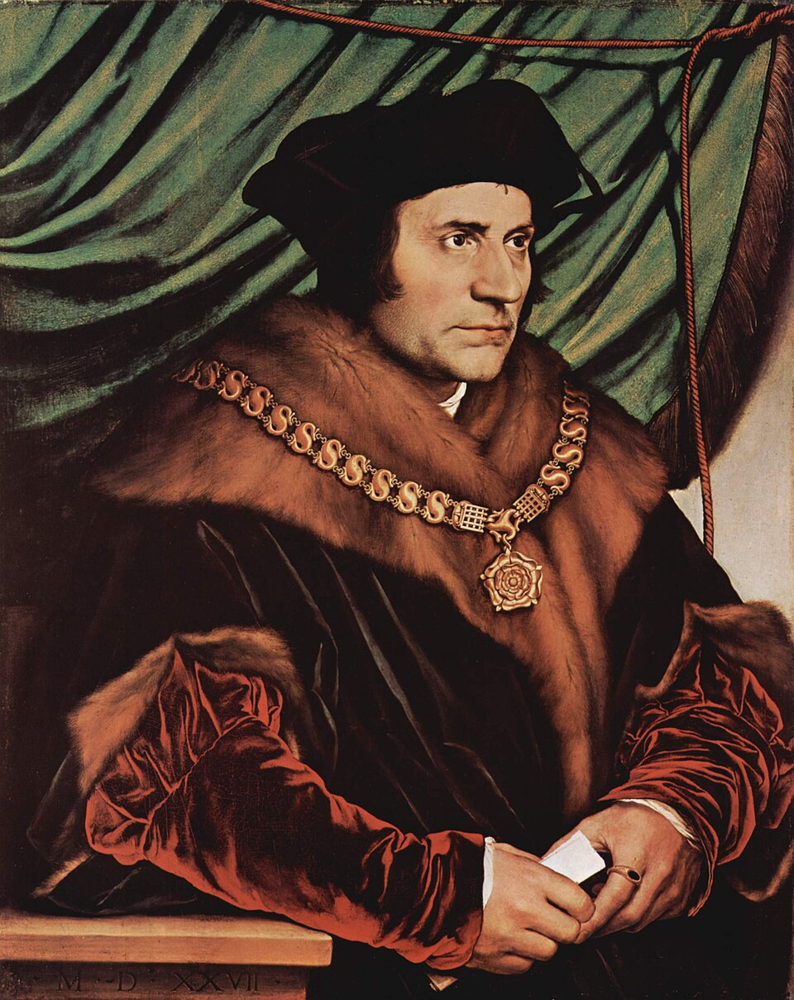
トマス・モア思想家『ユートピア』で知られる- ジャン・ド・ダントヴィル外交官《大使たち》の左の人物。モットーがメメント・モリ
- ジョルジュ・ド・セルヴ使節《大使たち》の右の人物。国王説得のため派遣
印刷の先駆け
肖像・図版の出典
- 《自画像（毛皮の上着を着た自画像）》アルブレヒト・デューラー：出典（CC0 1.0）
- 《ルーカス・クラーナハ（父）の肖像》ルーカス・クラーナハ（子）、1550年、ウフィツィ美術館：出典（Public domain）
- 《自画像》ハンス・ホルバイン（子）、1542～1543年頃、色チョーク、ウフィツィ美術館：出典（Public domain）
- 《マルティン・ルターの肖像》ルーカス・クラーナハ（父）：出典（Public domain（PD-Art））
- 《皇帝マクシミリアン1世》アルブレヒト・デューラー、1519年、ウィーン美術史美術館：出典（Public domain）
- 《イングランド王ヘンリー8世の肖像》ハンス・ホルバイン（子）：出典（Public domain（PD-Art））
- 《執筆するエラスムスの肖像》ハンス・ホルバイン（子）：出典（Public domain（PD-Art））
- 《サー・トマス・モアの肖像》ハンス・ホルバイン（子）：出典（Public domain（PD-Art））
- 《大使たち》ハンス・ホルバイン（子）：出典（Public domain（PD-Art））
神聖ローマ帝国という舞台
ドイツで展開した北方美術
動画 1:27～北方ルネサンスとは、イタリアより北、アルプス以北のベルギー、オランダ、ドイツなどで起こった芸術活動です。ネーデルラント、とりわけ現在のベルギー付近にあたるフランドルでは、油彩の発展とともに、写実性と遊び心を兼ね備えた作品が作られました。《アルノルフィーニ夫妻の肖像》では、鏡を通じて夫妻の後ろ姿や、作者自身とされる人物まで描かれています。
 画像を拡大 ＋
画像を拡大 ＋
《アルノルフィーニ夫妻の肖像》
- 作者
- ヤン・ファン・エイク
- 制作時期
- 1434年
- 所在地・所蔵
- ナショナル・ギャラリー、ロンドン
- 素材・形式
- 絵画
出典・画像について
ここでは、神聖ローマ帝国、現在のドイツにあたる地域を取り上げます。同じ北方ルネサンスでも、ネーデルラントとは異なる表現が展開しました。その違いにも、歴史的な背景が深く関わっています。
皇帝の選挙と帝国の発展
動画 2:24～神聖ローマ帝国の始まりは、962年のオットー1世の戴冠にさかのぼります。後ろ盾を求めるローマ教皇が、東フランク王国を皇帝の国として認めました。広大な領土を持つ強国に見えますが、皇帝位は単純な世襲ではなく、有力貴族による選挙で選ばれました。フランスやイングランドの王のように、血筋で位を継ぐ君主とは異なり、皇帝の権力は必ずしも強くありませんでした。
聖職者の任命を巡る叙任権闘争では、本来協力すべきローマ教皇とも対立しました。それでも帝国が広い領土を持ちえた背景には、11～12世紀の農業革命がありました。農地を有効に使う三圃制や、牛や馬に大きく重い鋤を引かせる技術によって、農業が発展し、人口が増加しました。
農業の発展から、農具を作る職人、作物を取引する商人、資金を提供する金融業者が生まれ、商業同盟であるハンザ同盟が成立しました。フランドルもその交易網に関わりました。皇帝と教皇の対立や諸侯の勢力争いで政治は不安定でも、15世紀までの帝国は経済的に発展しました。
農民や騎士団は東ヨーロッパへも移動し、現在のチェコやポーランドにあたる地域へ移住しました。ただし、帝国の領土の境界は曖昧でした。15世紀半ば以降、皇帝位を独占するようになったハプスブルク家は、帝国の結束よりも、帝国外を含む一族の領土拡大に力を注ぎました。帝国は名前だけのまとまりに近づいていきます。こうしたなか、ドイツではフランドルやイタリアの影響を受けつつ、独自の美術が生まれました。
ドイツ美術の伝統
苦痛の表現と版画の伝統
動画 4:18～ドイツの美術は、15世紀後半にデューラーが登場するまで、ゴシックに分類されます。イタリアやフランドルがすでにゴシックから歩み出していたのに対し、ドイツでは15世紀半ばにフランドルの写実的絵画が伝わっても、きらびやかな背景などに国際ゴシックの特徴が残りました。

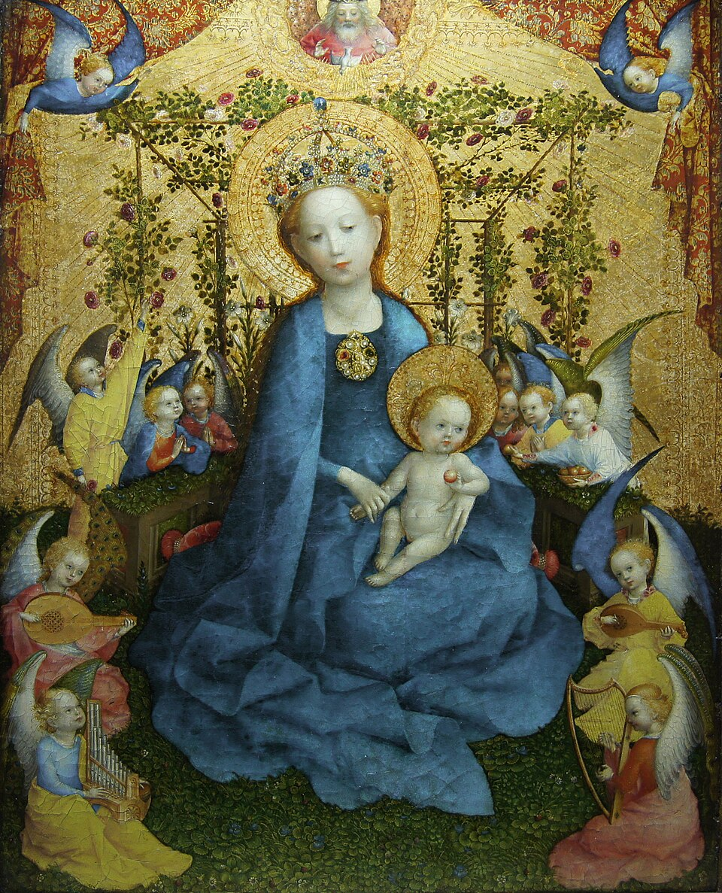
画像を拡大 ＋《薔薇垣の聖母》
- 作者
- シュテファン・ロッホナー
- 制作時期
- 1440～1442年頃
- 所在地・所蔵
- ヴァルラフ＝リヒャルツ美術館、ケルン
- 素材・形式
- 絵画
出典・画像について
この地で独自に発展した表現の一つが、苦痛を強調したキリスト像です。ひどい苦しみを受けるキリストと、その苦しみを分かち合うという信仰が根底にあり、より痛々しく、むごたらしく描くことが求められました。古代ギリシアやローマの理想美を追求するイタリアとは、対照的な方向です。
鞭打ちの候補は、動画と柱・人物・室内の構図が一致しませんでした。作者・制作年・所蔵先の推測を避け、画像掲載を保留しています。
《受難表現の作例・鞭打たれるキリスト（動画左図）》
- 作者
- 未同定
- 制作時期
- 未確定
- 所在地・所蔵
- 未同定
- 素材・形式
- 絵画
出典・画像について
制作メモ
同定候補と不採用の根拠・出典は作成報告と調査記録に保存しています。
候補は十字架と天使を描く別作品で、動画の聖母・ヨハネ・棺を含む構図とは一致しませんでした。別作品で代用せず保留しています。
《受難表現の作例・悲しみの人（動画右図）》
- 作者
- 未同定
- 制作時期
- 未確定
- 所在地・所蔵
- 未同定
- 素材・形式
- 絵画
出典・画像について
制作メモ
同定候補と不採用の根拠・出典は作成報告と調査記録に保存しています。
ペストの流行時には、「死の舞踏」、ダンス・マカーブルという主題も扱われました。感染症による死への不安を反映したかのような、グロテスクな描写が、ドイツを中心に広まったのです。

《死の舞踏（ニュルンベルク年代記の挿絵）》
- 作者
- ミヒャエル・ヴォルゲムート
- 制作時期
- 1493年
- 所在地・所蔵
- メトロポリタン美術館（掲載元の刊本葉2018.839.160）
- 素材・形式
- 木版画
出典・画像について
もう一つの特色が、版画です。グーテンベルクの活版印刷がよく知られますが、銅版画や木版画の制作も盛んでした。中世の聖地巡礼で、巡礼者へ記念品を配るため、複製品を作る技術が発達しました。グーテンベルクも、アーヘン大聖堂への巡礼者のために、巡礼記念バッジを作ったとされます。版画は、自国の特色であり誇りと認識されていました。

《悪魔に苦しめられる聖アントニウス（聖アントニウスの誘惑）》
- 作者
- マルティン・ショーンガウアー
- 制作時期
- 1470～1475年頃
- 所在地・所蔵
- メトロポリタン美術館（掲載画像の刷20.5.2）
- 素材・形式
- 銅版画（エングレーヴィング）
出典・画像について
デューラー
デューラーとイタリアとの出会い
動画 5:53～ドイツの信仰と版画の伝統のなかから、アルブレヒト・デューラーが現れました。ドイツ美術史で特に重要な人物です。父は金細工師で、デューラー自身も金属加工を学び、銅版画などを制作しました。若い頃から才能を示し、13歳の自画像にも、すでに高い技術が表れています。

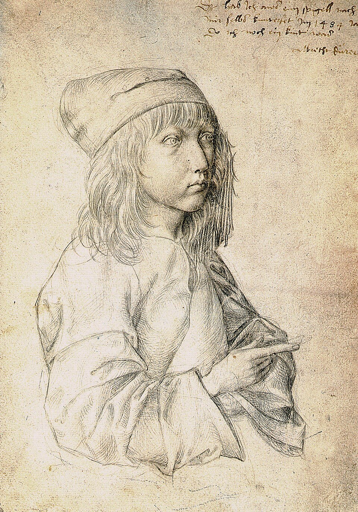
画像を拡大 ＋《13歳の自画像》
- 作者
- アルブレヒト・デューラー
- 制作時期
- 1484年
- 所在地・所蔵
- アルベルティーナ美術館、ウィーン
- 素材・形式
- 銀筆素描
出典・画像について
転機となったのは、24歳の頃のイタリア旅行でした。故郷ニュルンベルクで流行したペストを避けるために訪れたのが、ヴェネツィアです。ヴェネツィア派のベッリーニらの作品に触れ、イタリア美術を通して、古代ギリシア・ローマの理想美を学びました。15世紀末のイタリアは、盛期ルネサンスへ向かう時代でした。
しかし、故郷ドイツの美術は、醜さを避けずに表す伝統を持っていました。絶対的な理想美を目指すイタリアを学んだことで、デューラーは、その二つの間で悩むことになります。
そのなかで描いたのが、《1500年の自画像》です。28歳の自分を、意図的にキリストになぞらえるように表しました。そこには、ゴシックにとどまるドイツ美術を変えるという、芸術家としての矜持と覚悟が示されています。

《自画像（毛皮の上着を着た自画像）》
- 作者
- アルブレヒト・デューラー
- 制作時期
- 1500年
- 所在地・所蔵
- アルテ・ピナコテーク、ミュンヘン
- 素材・形式
- 油彩・板
出典・画像について
自然・人体比率・版画の探究
動画 7:30～デューラーが重視したのは、何より自然から学ぶ姿勢でした。美しいものも醜いものも、ありのままに描くことが、その到達点です。イタリアのように自然を理想化するのではなく、見たものを基準に、理想化しない写実性を求めました。

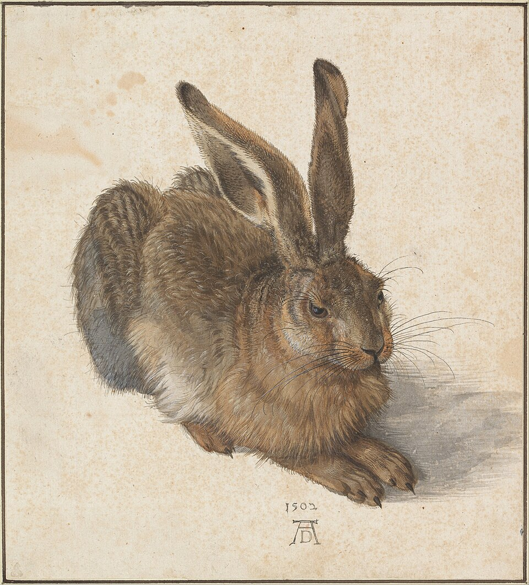
画像を拡大 ＋《野うさぎ》
- 作者
- アルブレヒト・デューラー
- 制作時期
- 1502年
- 所在地・所蔵
- アルベルティーナ美術館、ウィーン
- 素材・形式
- 水彩・グワッシュ
出典・画像について
同時に、科学的な研究にも熱心でした。人体の比率を正確に調べ、その成果を絵画に生かします。理想的な美を表す場合も、自分が研究したプロポーションの範囲で行いました。無理に腰をくびれさせるのではなく、自然から学んだ、実際に取り得る人体比率のなかから、よい形を選んだのです。

《アダムとエヴァ》
- 作者
- アルブレヒト・デューラー
- 制作時期
- 1507年
- 所在地・所蔵
- プラド美術館、マドリード
- 素材・形式
- 油彩・板
出典・画像について
デューラーは、版画の発展にも大きく貢献しました。ハッチングという技法を効果的に使い、版画とは思えない細密な描写を実現しました。また、神聖ローマ皇帝マクシミリアン1世のためにも働き、巨大な版画を制作しています。二度のイタリア旅行を経て、その学びとドイツの美術を融合させました。

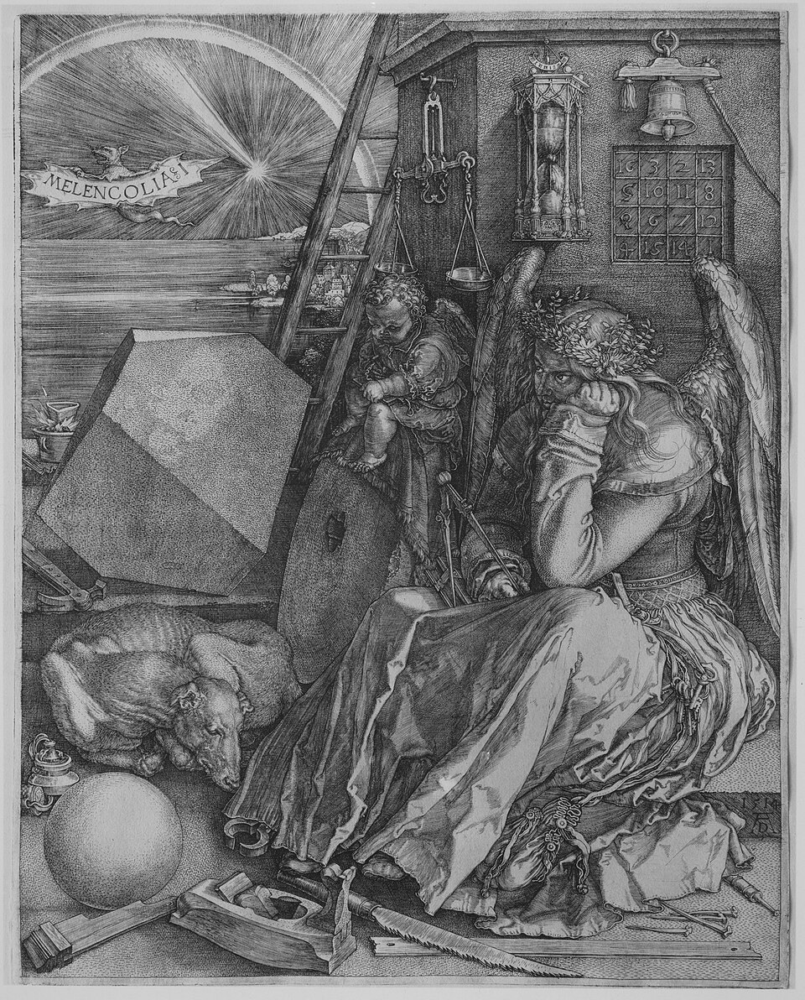
画像を拡大 ＋《メランコリア I》
- 作者
- アルブレヒト・デューラー
- 制作時期
- 1514年
- 所在地・所蔵
- メトロポリタン美術館（掲載画像の刷）
- 素材・形式
- 銅版画（エングレーヴィング）
出典・画像について

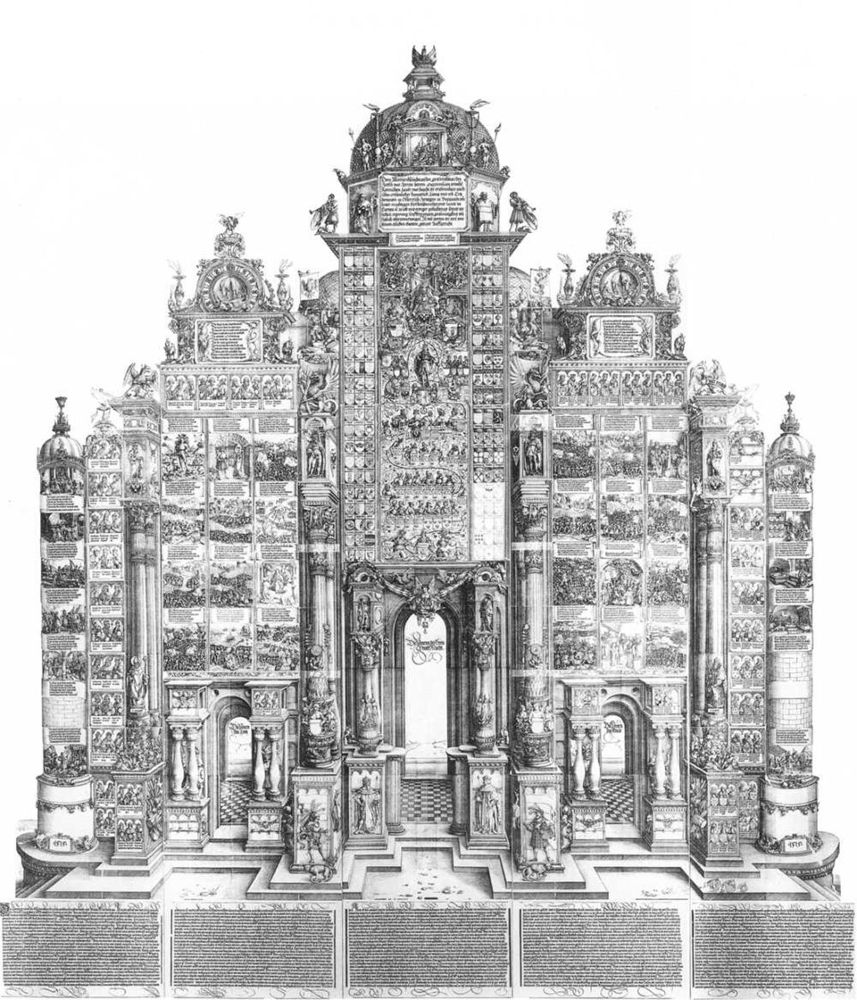
画像を拡大 ＋《皇帝マクシミリアン1世の凱旋門》
- 作者
- アルブレヒト・デューラー、アルブレヒト・アルトドルファー、ハンス・シュプリンギンクレー、ヴォルフ・トラウトほか
- 制作時期
- 1515年頃の図案、初版1517～1518年
- 所在地・所蔵
- ゲルマン国立博物館、ニュルンベルク（掲載図版の所蔵表示）
- 素材・形式
- 木版画
出典・画像について
複数作家が関わった巨大な組み合わせ木版画です。建築物ではありません。図案と初版の時期、個々の版・刷を区別します。
画像出典：Albrecht Dürer
Public domain（PD-Art）
作品情報：作品・画像・利用条件
グリューネヴァルト
グリューネヴァルトの苦痛表現
動画 8:35～デューラーと同時代に生きながら、ゴシックの伝統を引き継いだのがグリューネヴァルトです。「光の巨匠」デューラーに対する「影の巨匠」として位置づけられます。作品には、苦痛を強調するドイツの伝統的なキリスト表現が見られます。目隠しされたキリストが、拷問者から殴られる直前を描いた作品もあります。

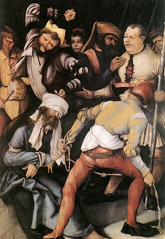
画像を拡大 ＋《キリストの嘲弄》
- 作者
- マティアス・グリューネヴァルト
- 制作時期
- 1503～1505年頃
- 所在地・所蔵
- アルテ・ピナコテーク、ミュンヘン
- 素材・形式
- 油彩・板
出典・画像について
代表作《イーゼンハイム祭壇画》では、磔にされたキリストが、写実性も相まって非常に痛々しく表現されています。実物は大きな祭壇画で、その規模も印象的です。
 画像を拡大 ＋
画像を拡大 ＋
《イーゼンハイム祭壇画（閉扉時の磔刑面）》
- 作者
- マティアス・グリューネヴァルト
- 制作時期
- 1512～1516年頃
- 所在地・所蔵
- ウンターリンデン美術館、コルマール
- 素材・形式
- 油彩・板
出典・画像について
宗教改革とクラーナハ
宗教改革とクラーナハの工房
動画 9:02～グリューネヴァルトは宮廷画家でありながら、宗教改革後にはプロテスタントへ傾き、その立場の間で悩んだといわれます。1517年、ルターを契機として始まった宗教改革は、聖書を重視し、聖像と偶像崇拝の関係を問い直すものでした。ビザンツ帝国の聖像論争を思わせる問題です。
重要な補足：宗教改革と宗教画像
解説はルター派がキリストや聖母の像を一律に禁止したと説明しますが、宗教改革諸派の態度は一様ではありません。ルター派でも宗教画像は用いられました。メトロポリタン美術館の《律法と恩寵》の解説は、クラーナハがルターの神学を伝えるために十字架などの宗教的図像を用いたことを示します。本文では一律禁止とする断定を採用せず、聖像と偶像崇拝の問題として記述しました。
確認資料：メトロポリタン美術館《律法と恩寵》
ドイツや北ネーデルラントにプロテスタントの思想が広がると、聖人を描いた作品は減っていきました。グリューネヴァルトも、晩年は絵を描くことをやめ、静かに過ごしたとされます。彼とデューラーは、ともに1528年に亡くなりました。
カトリックへの抗議が盛んになるなか、宗教画の注文が減り、画家たちは苦境に立たされました。ビザンツ帝国では、聖像禁止によって100年近く美術が停滞しました。こうした時代に成功したのが、ルーカス・クラーナハです。教義に抵触しないギリシア神話や、それをもとにした教訓的な絵画を数多く制作し、大きな工房と資産を築きました。
クラーナハのヴィーナス像は、細くくびれた腰と、10頭身ほどにも見える長い体が特徴です。デューラーのように正確な人体の再現を追求するのではなく、体を引き伸ばす、マニエリスム的な表現が強く見られます。

《ヴィーナス》
- 作者
- ルーカス・クラーナハ（父）
- 制作時期
- 1532年
- 所在地・所蔵
- シュテーデル美術館、フランクフルト
- 素材・形式
- 絵画
出典・画像について
額を含む原作品写真。原作のパブリックドメインと写真の利用条件を区別。
画像出典：Szilas（撮影） / Lucas Cranach the Elder（原作）
CC BY-SA 4.0
作品情報：作品・画像・利用条件
ルターを伝えた肖像と印刷
動画 10:32～クラーナハの名を広めた代表的な作品は、マルティン・ルターの肖像です。ルターは「95か条の論題」を教会に掲げた後に破門されましたが、ザクセン選帝侯に保護されました。その選帝侯の宮廷画家が、クラーナハでした。選帝侯とは、神聖ローマ皇帝を選ぶ権利を持つ諸侯です。

《マルティン・ルターの肖像》
- 作者
- ルーカス・クラーナハ（父）
- 制作時期
- 1529年
- 所在地・所蔵
- 聖アンナ教会、アウクスブルク
- 素材・形式
- 絵画・肖像画
出典・画像について
上部の銘文が残るアウクスブルクの個体。動画に並ぶ妻の像と、同じ所蔵先の一対とは確認できていません。
画像出典：Lucas Cranach the Elder
Public domain（PD-Art）
作品情報：作品・画像・利用条件
制作メモ
低解像度の配信画像です。
ルターは選帝侯のもとで、聖書のドイツ語訳に取り組み、クラーナハもそれを助けました。肖像画は、ルターの名と顔を広く知らせるうえでも、大きな役割を果たしました。
クラーナハは、ルターと妻カタリナを対の肖像として描きました。カトリックでは聖職者に独身が求められましたが、ルターは、その規定には聖書の根拠がないとして結婚します。聖職者が妻と対の肖像になることは、当時としては大きな意味を持ちました。
候補は白襟の結び紐・胸当ての模様・顔が動画と異なるため不採用です。同じ人物の別肖像で代用せず保留しています。
《カタリナ・ルターの肖像（動画の個体）》
- 作者
- ルーカス・クラーナハ（父、動画表示）
- 制作時期
- 1526年頃（動画表示）
- 所在地・所蔵
- 個体の所蔵先は未同定
- 素材・形式
- 絵画・肖像画
出典・画像について
制作メモ
同定候補と不採用の根拠・出典は作成報告と調査記録に保存しています。
作品情報の留保：夫妻の肖像
夫婦の肖像を制作する意義は解説のとおり保持しています。一方、映像で併置される1529年のルター像と1526年頃のカタリナ像が、現在も同じ所蔵先にある一対かどうかは確認できていません。カタリナの候補画像は顔・白襟の紐・服の模様が異なり、不採用にしました。
ドイツ語訳聖書は活版印刷によって、ルターの肖像は版画によって広まりました。印刷技術の発達が、宗教改革を支えたのです。
ホルバインとイングランド
イングランドへ渡ったホルバイン
動画 11:41～クラーナハと並んで肖像画で成功した画家が、ハンス・ホルバインです。クラーナハとは異なり、宗教改革の影響もあってイングランドへ渡り、ヘンリー8世の宮廷画家となりました。
ヘンリー8世は、もとは熱心なカトリック信者で、ルターの宗教改革に否定的でした。しかし、自分の離婚問題を教皇に認められなかったことで対立し、ルターとは別の形で宗教改革を進めます。イングランド国教会を樹立し、絶対王政を強化しました。ホルバインの肖像も、この変革の時代に国王の姿を伝える役割を担った点で、クラーナハと通じています。

《イングランド王ヘンリー8世の肖像》
- 作者
- ハンス・ホルバイン（子）
- 制作時期
- 1537年頃
- 所在地・所蔵
- ティッセン＝ボルネミッサ国立美術館、マドリード
- 素材・形式
- 絵画・肖像画
出典・画像について
ホルバインは、ルターにも影響を与えたネーデルラントの人文学者エラスムスや、『ユートピア』で知られる思想家トマス・モアなど、多くの著名人の肖像を描きました。クラーナハと比べても、写実的な表現が特徴です。

《執筆するエラスムスの肖像》
- 作者
- ハンス・ホルバイン（子）
- 制作時期
- 1528年（ルーヴル現行目録）
- 所在地・所蔵
- ルーヴル美術館、パリ
- 素材・形式
- 絵画・肖像画
出典・画像について
動画表示1523年に対し、ルーヴルの現行作品目録は1528年とします。同じ図像の年代差を記録。
画像出典：Hans Holbein the Younger
Public domain（PD-Art）
作品情報：作品・画像・利用条件

《サー・トマス・モアの肖像》
- 作者
- ハンス・ホルバイン（子）
- 制作時期
- 1527年
- 所在地・所蔵
- フリック・コレクション、ニューヨーク
- 素材・形式
- 絵画・肖像画
出典・画像について
作品情報の補足：肖像画の制作年
《ヘンリー8世の肖像》は動画1536年、所蔵館1537年頃。《執筆するエラスムス》は動画1523年、ルーヴル現行目録1528年です。動画と一致する個体を使用し、作品カードは現行の所蔵館記録を採用しました。
確認資料：ティッセン＝ボルネミッサ美術館 · ルーヴル作品台帳
父からの継承と《大使たち》
動画 12:33～ホルバインには、同名の画家である父がいました。父の作品はゴシックの特徴を残しながら、ルネサンスの写実性も取り入れ、一点透視図法を用いています。そのような表現が、息子にも受け継がれました。

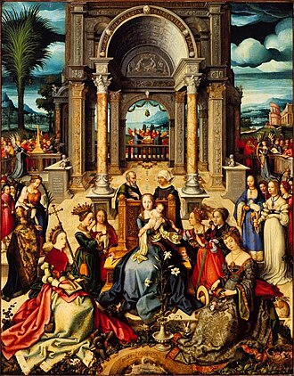
画像を拡大 ＋《聖母子と聖人・天使たち》
- 作者
- ハンス・ホルバイン（父）
- 制作時期
- 1519年
- 所在地・所蔵
- 国立古美術館、リスボン
- 素材・形式
- 絵画
出典・画像について
画像出典：Hans Holbein the Elder
Public domain（PD-Art）
作品情報：作品・画像・利用条件
制作メモ
古典建築のアーチ・左上の椰子・人物配置を照合したリスボン所蔵の原画です。
低解像度の配信画像です。
代表作《大使たち》には、左にフランスの外交官ジャン・ド・ダントヴィル、右にジョルジュ・ド・セルヴが描かれています。ヘンリー8世の離婚問題に際し、国王を説得するため派遣された人々です。
この作品は肖像画であると同時に、静物画としての性格も持っています。左上には十字架に磔にされたキリスト像があり、棚の天球儀などは、二人が知識人であることを示します。描かれた品々が意味を担う、比喩的な表現です。
画面下部の不思議な形は、斜めから見ると頭蓋骨として現れます。ジャン・ド・ダントヴィルのモットーが「死を忘れるな」を意味するメメント・モリだったため、このように描いたという説が有力とされます。ただし、これは推測であり、品々に込められた意味には、いまだ謎が残っています。

《大使たち》
- 作者
- ハンス・ホルバイン（子）
- 制作時期
- 1533年
- 所在地・所蔵
- ナショナル・ギャラリー、ロンドン
- 素材・形式
- 絵画・肖像画
出典・画像について
そのほかの画家
北方の様式と広がる主題
動画 13:49～《大使たち》のように見る人を驚かせる仕掛けは、フランドル絵画の遊び心にも通じます。ホルバインは、イタリアのルネサンスと北方の様式を、イングランドへ持ち込んだ画家と位置づけられます。
ほかにも、古典的な題材に取り組む一方、純粋な風景画を描いた最初期の画家とされるアルブレヒト・アルトドルファーがいます。また、デューラーの優れた弟子ともいわれるハンス・バルドゥングは、人の命のはかなさや現世のむなしさを示す作品を描きました。

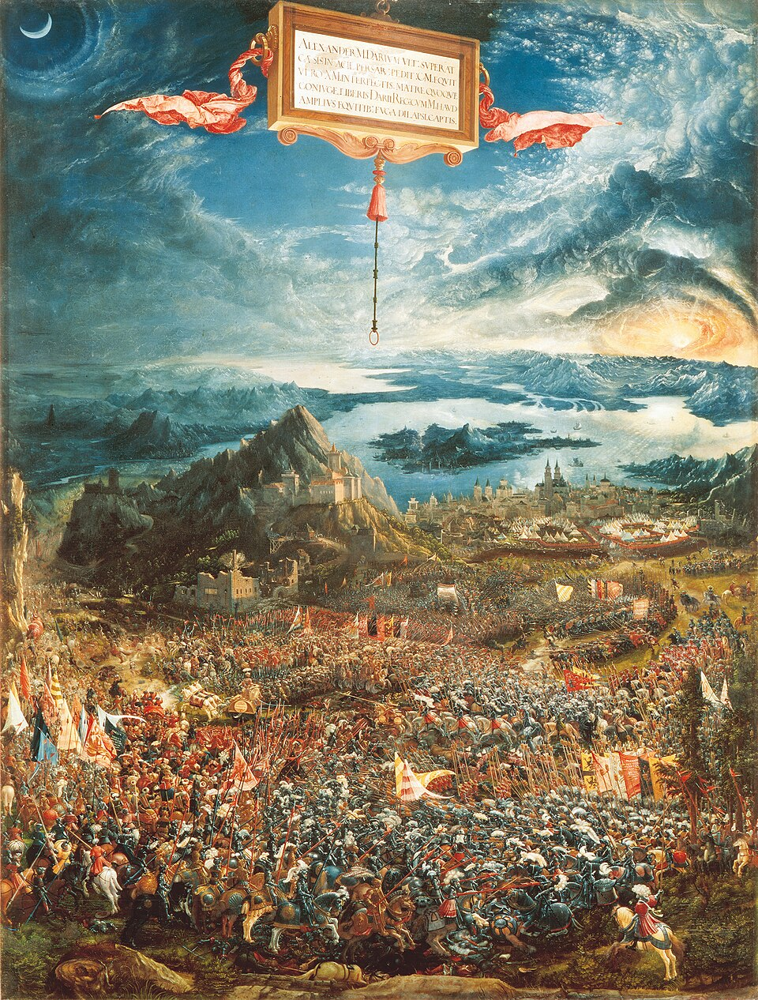
画像を拡大 ＋《アレクサンドロス大王の戦い（イッソスの戦い）》
- 作者
- アルブレヒト・アルトドルファー
- 制作時期
- 1529年
- 所在地・所蔵
- アルテ・ピナコテーク、ミュンヘン
- 素材・形式
- 絵画
出典・画像について
古典を題材とする戦争画の作例です。人物のいない純粋風景画の作例という意味ではありません。
画像出典：Albrecht Altdorfer
Public domain（PD-Art）
作品情報：作品・画像・利用条件

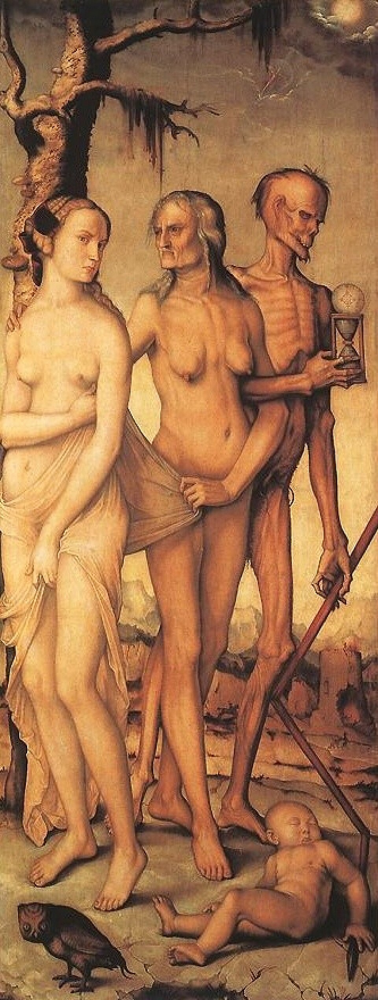
画像を拡大 ＋《人生の三段階と死》
- 作者
- ハンス・バルドゥング（グリーン）
- 制作時期
- 1541～1544年
- 所在地・所蔵
- プラド美術館、マドリード
- 素材・形式
- 絵画
出典・画像について
要点まとめ
- 神聖ローマ帝国（現在のドイツ）は962年のオットー1世の戴冠に始まる。皇帝は有力貴族の選挙で選ばれ、権力は必ずしも強くなかった。11〜12世紀の農業革命（三圃制など）とハンザ同盟の交易で経済は発展した。
- ドイツの美術は15世紀後半にデューラーが登場するまでゴシックに分類され、国際ゴシックの特徴が残った。苦痛を強調したキリスト像や「死の舞踏（ダンス・マカーブル）」、巡礼から発達した版画が特色である。
- アルブレヒト・デューラーは金細工師の家に生まれ、24歳頃のヴェネツィア旅行でイタリアの理想美を学んだ。《1500年の自画像》で自らをキリストになぞらえ、ドイツ美術を変える覚悟を示した。
- デューラーは自然をありのままに描く写実を重視し、人体比率を科学的に研究した。版画ではハッチングで細密な描写を実現し、マクシミリアン1世のために巨大な版画も制作した。
- グリューネヴァルトは「光の巨匠」デューラーに対する「影の巨匠」。《イーゼンハイム祭壇画》で磔のキリストを痛々しく描いた。二人はともに1528年に亡くなった。
- 1517年のルターに始まる宗教改革で宗教画の注文が減った。ルーカス・クラーナハはギリシア神話や教訓的な絵画、引き伸ばした体のヴィーナス像で成功し、ザクセン選帝侯の宮廷画家としてルターとその妻カタリナの肖像を描いた。
- ドイツ語訳聖書は活版印刷で、ルターの肖像は版画で広まり、印刷技術が宗教改革を支えた。
- ハンス・ホルバイン（子）はイングランドへ渡り、イングランド国教会を樹立したヘンリー8世の宮廷画家となった。エラスムスやトマス・モアの肖像、斜めから見ると頭蓋骨が現れる《大使たち》を描いた。
- ほかに、純粋な風景画を描いた最初期の画家とされるアルトドルファーと、デューラーの弟子とされるハンス・バルドゥングがいる。
確認問題
答えを考えてから開いてください。選択問題は選ぶとすぐ正誤と解説が出ます（選択肢の順番は開くたびに変わります）。各問題のリンクから該当の章や作品カードへ戻れます。
選択問題：0／5問回答・正解0
A. 一問一答答えを考えてから開く
問1ペストの流行時に、感染症による死への不安を反映するかのようにドイツを中心に広まった主題を何と呼ぶか。
答えを見る
問2デューラーが効果的に使い、版画とは思えない細密な描写を実現した技法は何か。
答えを見る
問3ホルバインの《大使たち》の頭蓋骨に関わるとされる、「死を忘れるな」を意味する言葉は何か。
答えを見る
B. 4択選ぶとすぐ正誤と解説
問4「光の巨匠」デューラーに対し、「影の巨匠」と位置づけられる画家は誰か。
→ 本文で確認（グリューネヴァルトの苦痛表現）
問5ザクセン選帝侯の宮廷画家で、マルティン・ルターの肖像によって名を広めた画家は誰か。
→ 本文で確認（ルターを伝えた肖像と印刷）
問6デューラーが《1500年の自画像》で、意図的に自分をなぞらえた存在はどれか。
→ 本文で確認（デューラーとイタリアとの出会い）
C. 図版問題画像を見て答える
問7この作品の名前と作者を答えよ。画面下部の不思議な形は、斜めから見ると何に見えるか。
答えを見る
問8この祭壇画の作者は誰か。
→ 作品カードで確認
問9この作品の作者は誰か。
→ 作品カードで確認